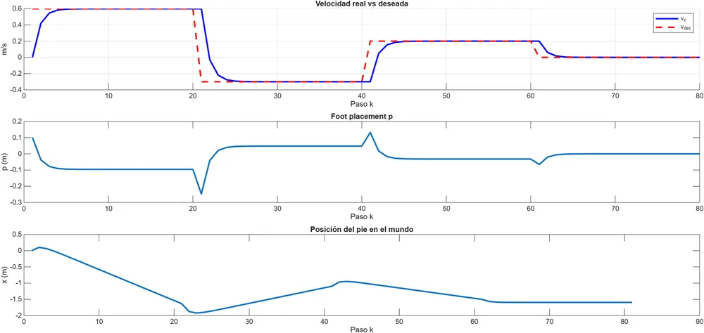
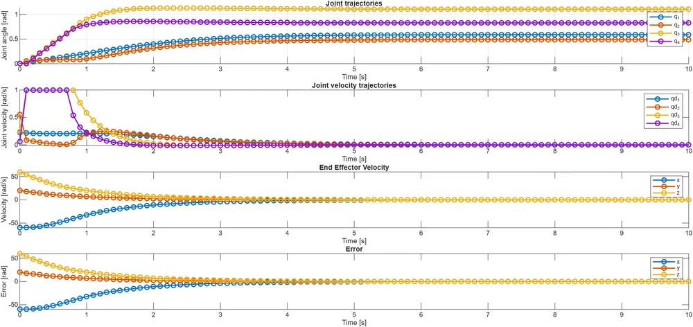
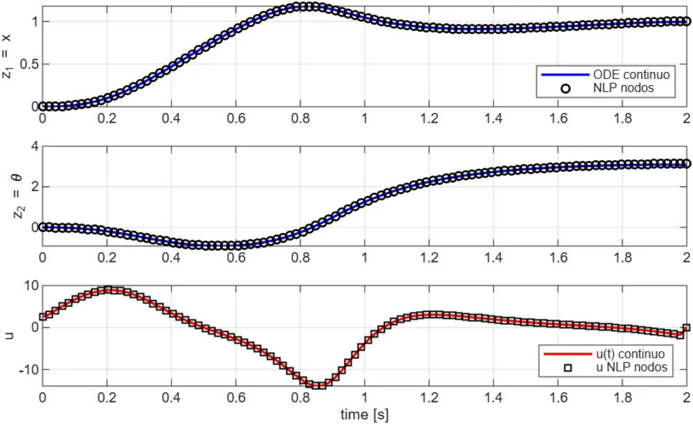
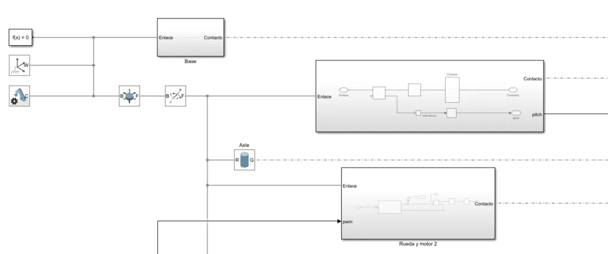

This project consolidates several advanced simulation-based studies in nonlinear control, hybrid locomotion modeling, constrained inverse kinematics, and trajectory optimization. Each study focuses on mathematical modeling, numerical implementation, and simulation-based validation.
1. Hybrid Locomotion Modeling: ALIP
Implementation and study of the Angular Momentum Linear Inverted Pendulum (ALIP) model for step-to-step locomotion analysis. This implementation replicates and analyzes the reduced-order locomotion framework presented by Y. Gong and J. W. Grizzle in their work on zero dynamics and angular momentum in bipedal locomotion.
- Closed-form discrete dynamics
- Hybrid reset map
- Momentum-based foot placement control
- Velocity tracking across multiple steps
- 2D animated walking simulation

Reference: Gong, Y., & Grizzle, J. W. Zero Dynamics, Pendulum Models, and Angular Momentum in Feedback Control of Bipedal Locomotion.
2. Constrained Inverse Kinematics: Robotic Arm
Two optimization-based IK formulations were implemented:
- IK via Quadratic Programming (IK-QP): linearized differential kinematics, QP formulation with constraints, regularization and smooth motion.
- IK via Nonlinear Programming (IK-NLP): full nonlinear optimization, obstacle avoidance constraint, end-effector trajectory shaping.

3. Trajectory Optimization: Direct Collocation
Implementation and numerical study of trajectory optimization using direct collocation methods. The formulation, discretization, and nonlinear programming structure were replicated from the tutorial developed by Matthew Kelly.
- Discretized nonlinear dynamics
- Equality constraints for system evolution
- Nonlinear programming formulation
- Numerical optimal control solution

Reference: Kelly, M. An Introduction to Trajectory Optimization: How to Do Your Own Direct Collocation.
4. Multibody Simulation: Self-Balancing Robot
Dynamic modeling and PID control of a self-balancing robot, implemented in ODE45 simulation and Simscape Multibody.

Technical Focus
- Hybrid dynamical systems
- Reduced-order locomotion models
- Constrained optimization (QP / NLP)
- Trajectory optimization
- Multibody simulation